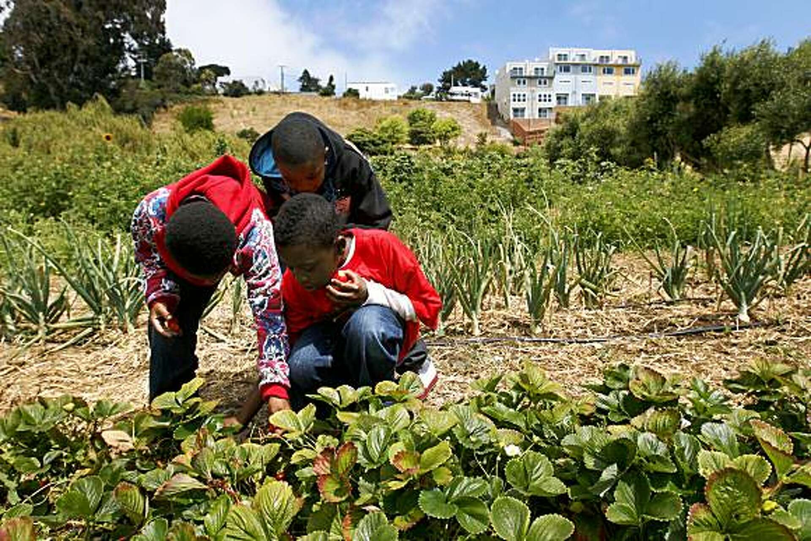
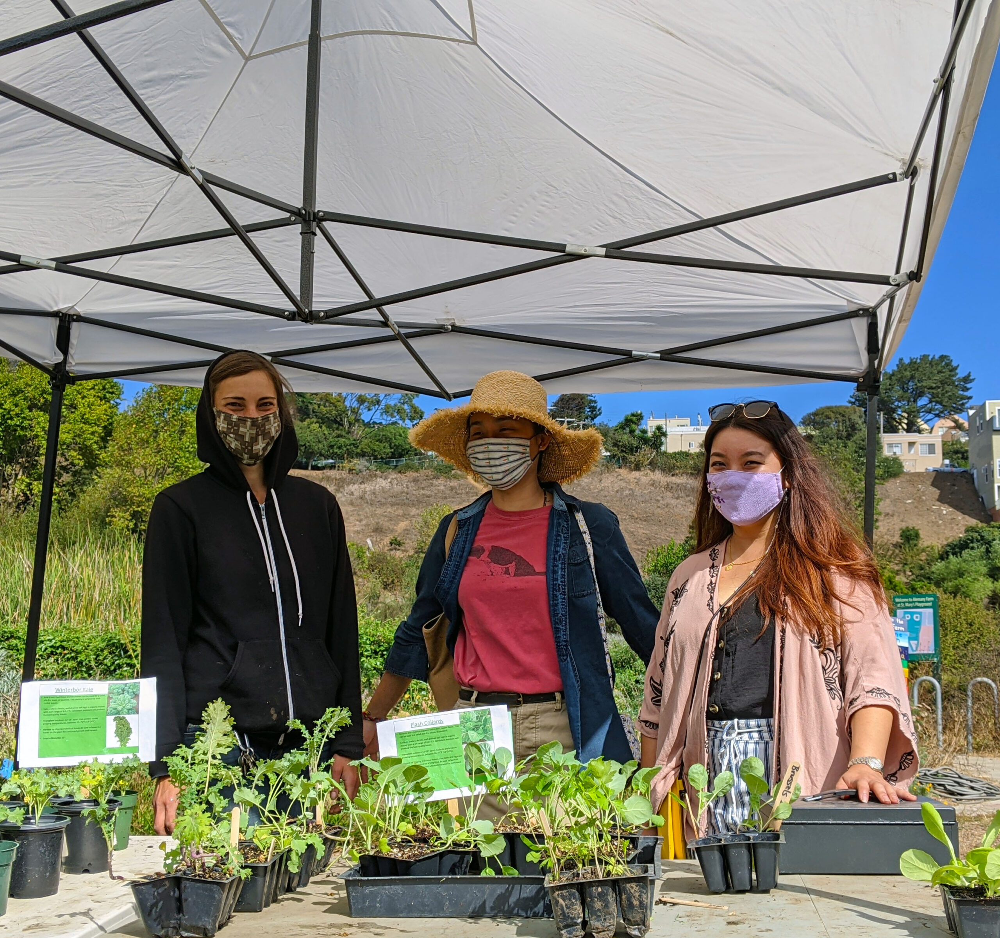

Donate
Donations help Friends of Alemany Farm care for the land, grow free produce, support training programs, and sustain workshops and community workdays.

Your Gift Supports
- Stewardship of the 3.5 acre farm site
- Growing and distributing free produce year-round
- Paid apprenticeship and internship opportunities
- Educational visits, workshops, and community workdays
- Habitat care and local grassroots partnerships
Ways to Give
- Make a one-time gift
- Set up a monthly recurring donation
- Give in honor or in memory of someone
- Try a birthday fundraiser
- Check whether your employer matches donations or volunteer hours
Why It Matters
Support helps the farm stay open as a place for free food distribution, environmental education, and community connection.
2025 Quick Facts
In 2025, Alemany Farm had 11 paid apprentices, 32 interns, more than 14,000 volunteer hours, and an estimated 35,500 pounds of fresh fruits and vegetables.
The farm also offered 20 workshops for more than 400 participants and supported close to 1,000 students through school visits and field trips.
